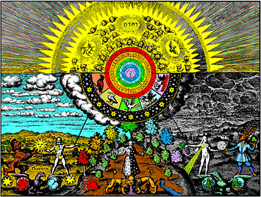

Click HERE to read Voltaire's essay on Hermes Trismegistus in his "Dictionary of Philosophy"(in French):
Listen to "Triumph of Hermes" in English

XI-1 HERMES TRIOMPHANT
Voici l'astre, le vent, la grotte, le torrent...
Mais la danse surgie est pas, ronde, démence.
L'univers s'abolit où mon rêve commence.
Au seuil de mon déclin quel délire me prend?
Le ciel a dévoré le chemin de l'errant.
Dans un même néant gisent routes et manses.
Des dieux dépossédés je choisis l'inclémence
Et non pas des élus la couronne et le rang.
s n'avez sous le chant enseveli le leurre
Ni recouvert l'appel de ce vaisseau perdu.
Dans ma chair, comme un champ, la semence de l'heure.
Je n'ai pas déserté le destin qui m'est dû
Et chemine à ma nuit, obscur vagabond du
Pays qui n'a de borne et dont rien ne demeure.
Michel Galiana (c) 1990
XI-1 THE TRIUMPH OF HERMES
Here are star, wind and cave and stream, all in a line
But a wild dance appears, dishevelled and perverse:
There, where my dream begins, ceases the universe.
What folly has seized me on the brink of decline?
The sky engulfed the path on which had roamed the tramp.
Streets and farmsteads have been engulfed by the same void.
The same inclemency, as by robbed gods employed
I did choose, discarding the Elect's wreath and rank.
You proved unable to bury in songs the lure.
Or to drown the call for help of this forlorn ship,
In the field of my flesh sprouts the seed of the hour.
Trials assigned to me I never strove to skip:
I wander in my night, on a long, obscure trip
In quest of a boundless, dilapidated moor.
Transl. Christian Souchon 01.01.2004 (c) (r) All rights reserved
Michel n'est plus un jeune homme. Il jette un regard sur le choix qu'il a fait: celui de la folie qui se moque de la réalité triviale, de la religion conventionnelle, de la célébrité...
L'Hermès dont il est question dans les poèmes XI-1 à XI-5, n'est pas, semble-t-il, le dieu du commerce, mais le mystérieux auteur, nommé d'après le dieu égyptien Hermès Trismégiste (ou Toth), des ouvrages "hermétiques" qui furent très prisés des alchimistes.
Now Michel is no young man anymore. He considers the choice he made: madness which denies trivial reality, conventional religion, celebrity...
The Hermes meant in the poems XI-1 to XI-5 is not, apparently, the god of commerce, but the mysterious author, named after the Egyptian god Hermes Trismegistus (or Toth), of the hermetic scriptures which enjoyed great credit among men of alchemy
Listen to "Triumph of Hermes" in English